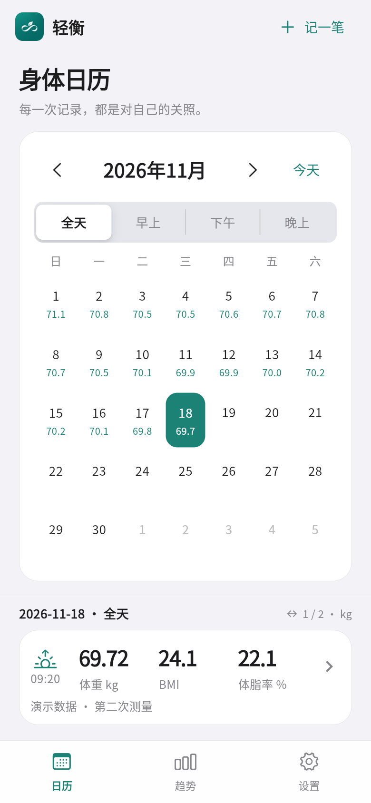
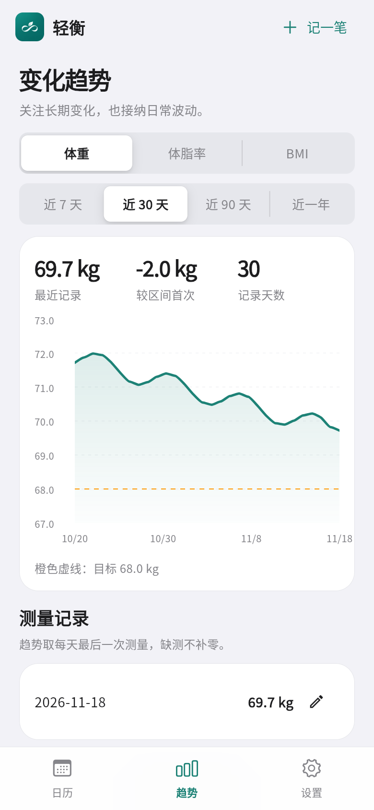
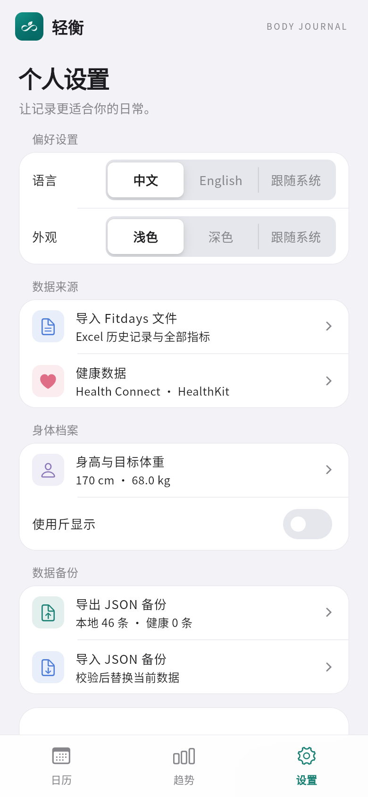

一眼看清每一天
体重留在日历上，体脂率、BMI 和完整测量藏在每日卡片里。同日多次记录，左右轻滑切换。
从今天的体重，到一段时间的趋势。
用轻衡，慢慢读懂自己的身体。

体重留在日历上，体脂率、BMI 和完整测量藏在每日卡片里。同日多次记录，左右轻滑切换。
查看体重、体脂及导入指标的长期曲线。切换时间范围，对照目标，也看见真实的日常起伏。
连接系统健康数据，打开 App 自动同步。也可以导入 Fitdays 表格，保留原始字段与历史测量。


界面展示均为虚构演示数据
健康记录保存在当前设备，App 不上传你的测量数据。系统健康接入仅读取，不修改原始记录。需要备份时，你可以自行导出 JSON。
下载轻衡，让变化慢慢变得清晰。
v0.7.1Android 8.0+64.1 MB
可覆盖安装旧版轻衡，保留原有数据。当前安装包使用测试签名。
iOS源码已支持 HealthKit，尚未发布可安装的 iOS 版本。
可以。你可以手动记录体重、体脂率与备注，也可以导入 Fitdays 导出的 .xlsx 历史记录。
首次进入“设置 → 健康数据”，点击“授权并读取”完成连接。之后打开或回到 App 时会自动同步，可随时关闭。Android 当前最多读取近 30 天，且需要其他 App 已向系统写入记录。
请先在设置中导出 JSON 备份并妥善保存，再在新设备导入。卸载 App 或清理数据可能导致本地记录丢失。
Poise 用于个人记录和趋势观察。体脂率来自测量或手动填写，BMI 按当前身高计算，均不用于医疗诊断。